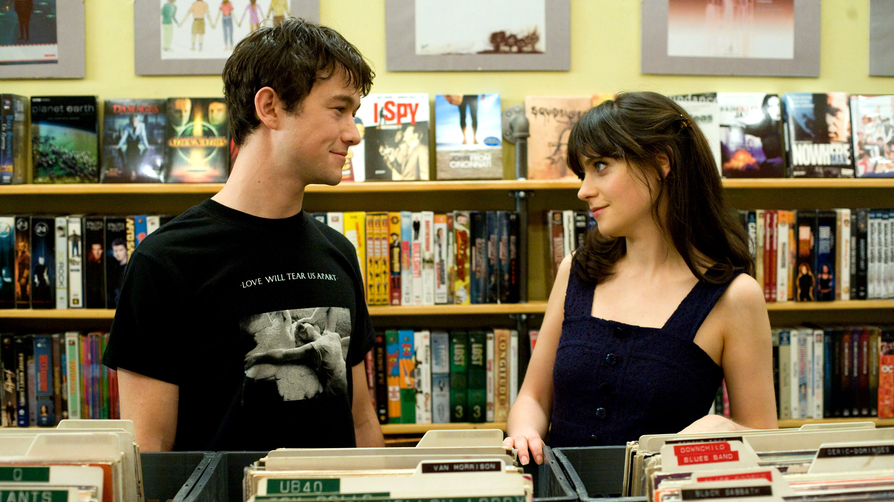
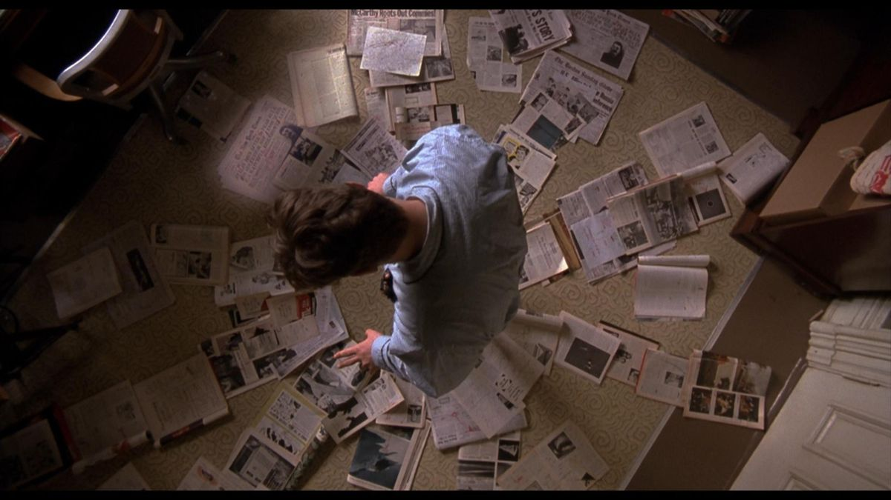
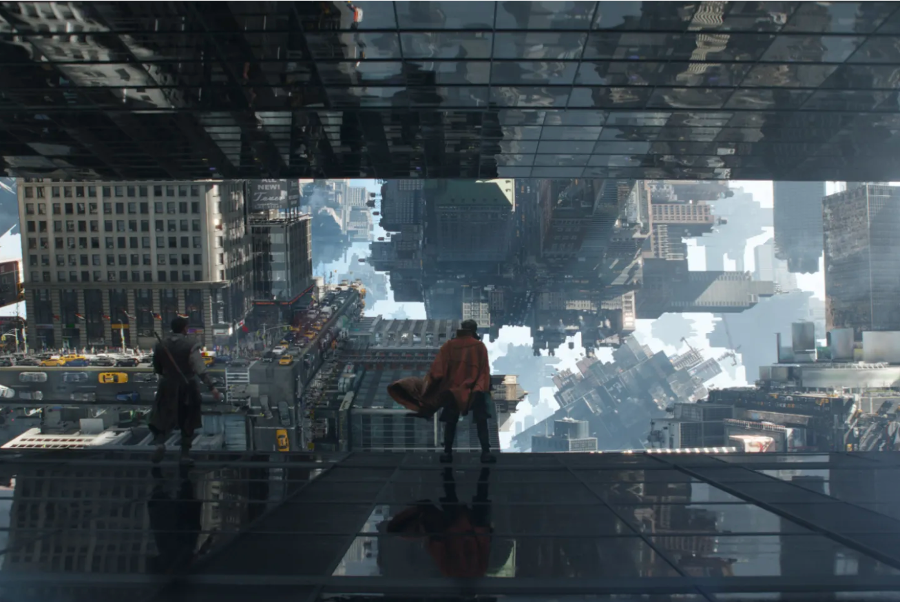
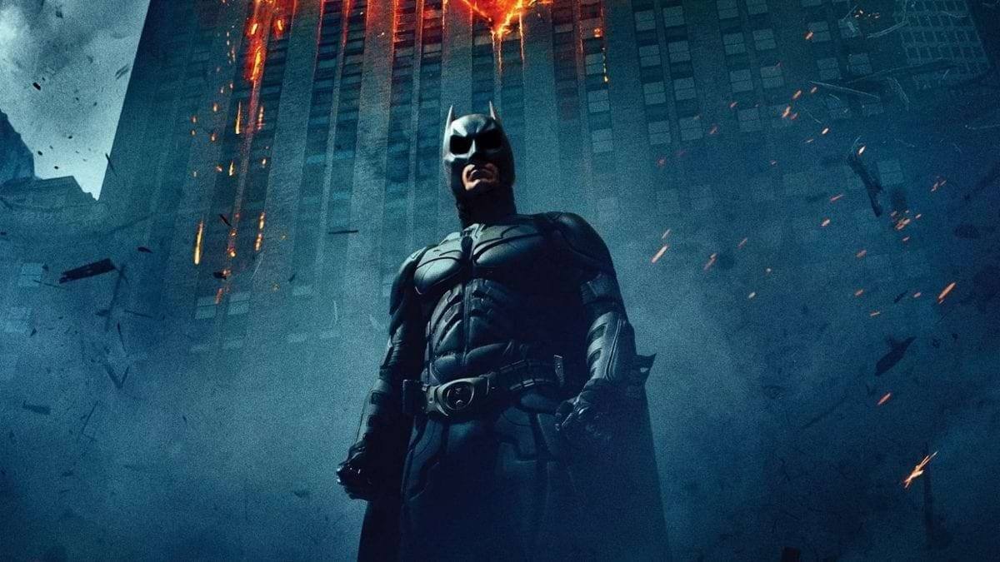
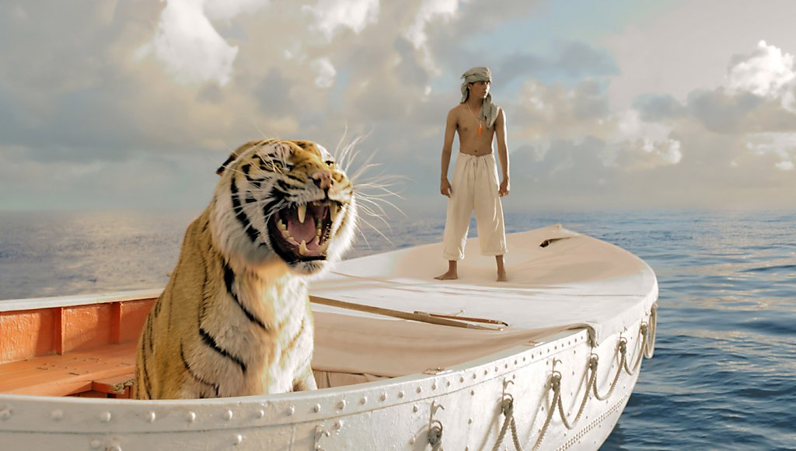

Visual elements are arranged within a frame to tell a story, create emotion, or guide the viewer’s attention —
Just like how a designer arranges layout in graphic design.

500 Days of Summer
Symmetrical Composition
Left and right sides of the
frame mirror each other, creating balance,
order, and harmony.
It’s like visual geometry —calm,
controlled,and pleasing to the eye.

A Beautiful Mind
Bird Eye Composition
Camera angle taken directly from
above the subject, looking straight down.
It positions the viewer as if they were observing the scene from high above
Like a bird in flight — which drastically changes how we perceive space, movement, and emotion.

Doctor Strange
Leading Lines Composition
Visual elements (real or implied) that direct the viewer’s eyes toward a specific subject or point of interest within the frame.
They act as visual guides —
pulling attention into the scene and helping shape how we read the image.

The Dark Knight
Low Angle Composition
When the camera is positioned below the subject, looking upward.
This shifts perspective dramatically —
it changes how the viewer feels about the subject, giving it power, dominance, or significance.

Golden Ratio Composition
Natural proportion found in art, nature, and architecture — from seashells and flowers to classic paintings.
In visual composition, it’s used to create harmony, balance, and natural flow — guiding the viewer’s eye smoothly through the frame.